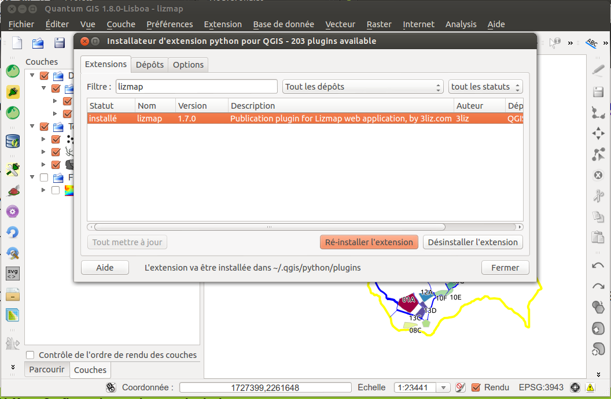

Récupération via les dépôts officiels
Lizmap est dans les dépôts officiels du projet QGIS :
http://plugins.qgis.org/plugins/lizmap/
Pour l’installer :
- Menu > Extensions > Installateur d’extensions python
- Rechercher Lizmap avec le filtre
- Installer le plugin
- Il se trouve ensuite dans le menu Internet et la barre de menu Site internet
Installation du plugin Lizmap

Présentation générale du plugin
Organisé en 4 onglets
- Couches : pour configurer les options avancées de chaque couche
- Carte : les options générales de la carte
- FTP : configurer la connexion FTP et ajouter le client pour Windows
- Log : affiche les informations des actions effectuées
Et des boutons d’actions :
* aide,
* sauvegarder,
* sauvegarder et synchroniser
* fermer